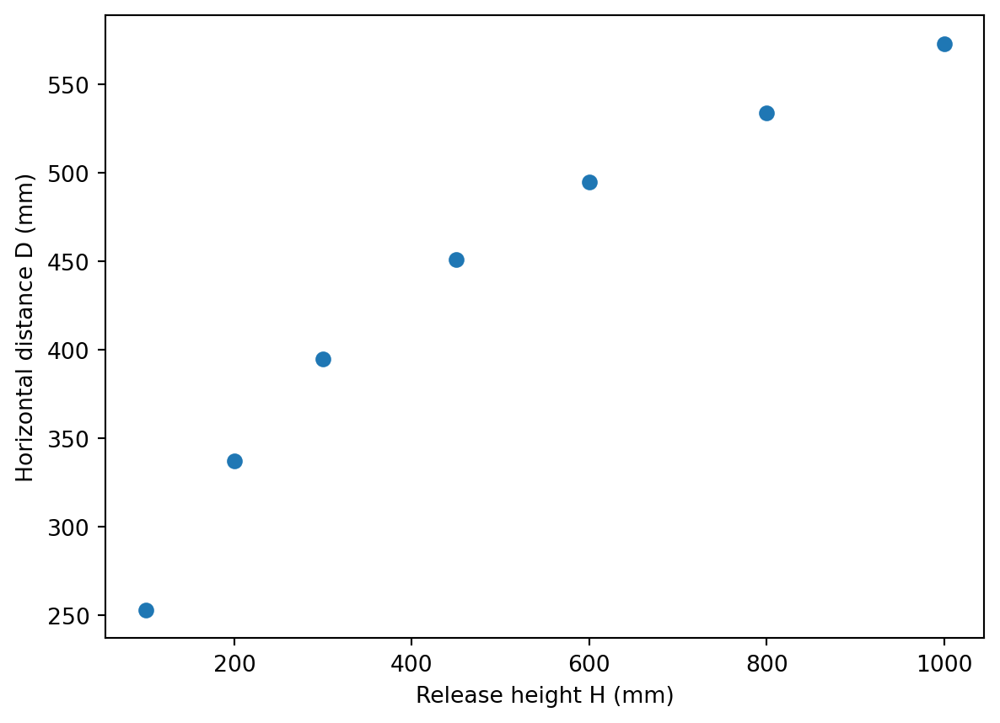

How do I use pandas to load and inspect experimental data from a CSV file?
How do I plot and fit data held in a DataFrame?
NoteObjectives
Load a CSV file with pandas.read_csv and inspect it with .head() and .describe().
Access columns by name and pass them to matplotlib and curve_fit.
Report fit parameters and uncertainties from the covariance matrix.
Why pandas?
Pandas is a library that behaves a lot like NumPy with arrays of numbers, but instead of using column (or row) indices to reference the data you can use column names (you can do this with NumPy too, but it’s more convoluted). Pandas reads a CSV file into a DataFrame - a table where each column has a name and a type. You can then refer to columns by name making your code easier to read.
Example problem: Galileo’s ramp experiment
Galileo rolled a ball off a table edge and measured the horizontal distance D it traveled as a function of the release height H on the ramp. Theory predicts:
\[D = k \sqrt{H}\]
where k depends on the table height and gravitational acceleration. Load the data, plot it, and find k with its uncertainty.
Worked solution
import pandas as pdimport numpy as npimport matplotlib.pyplot as pltfrom scipy.optimize import curve_fitdf = pd.read_csv("data/galileo_ramp.csv", comment="#")print(df.head())print(df.describe())
D H
0 573 1000
1 534 800
2 495 600
3 451 450
4 395 300
D H
count 7.000000 7.000000
mean 434.000000 492.857143
std 113.300485 327.144937
min 253.000000 100.000000
25% 366.000000 250.000000
50% 451.000000 450.000000
75% 514.500000 700.000000
max 573.000000 1000.000000
The DataFrame columns are named from the header row. Select them by name to pass to plotting and fitting functions:
plt.errorbar(df["H"], df["D"], fmt="o")plt.xlabel("Release height H (mm)")plt.ylabel("Horizontal distance D (mm)")plt.show()

Figure 1: Horizontal distance D versus release height H from Galileo’s ramp experiment
Define the model and fit. curve_fit accepts any array-like, including a pandas Series, as data: